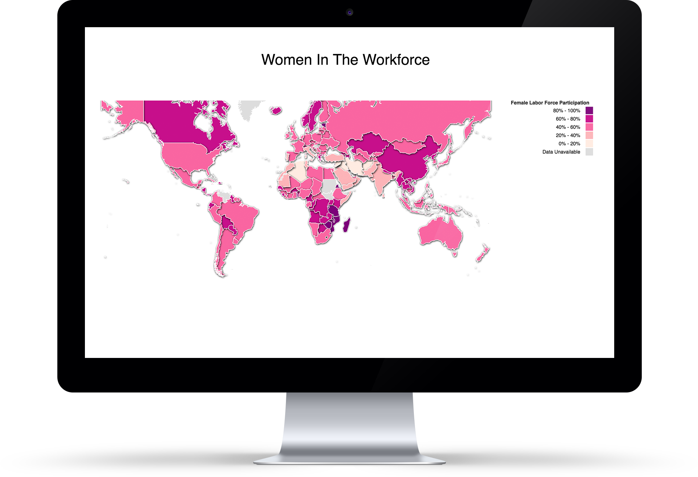
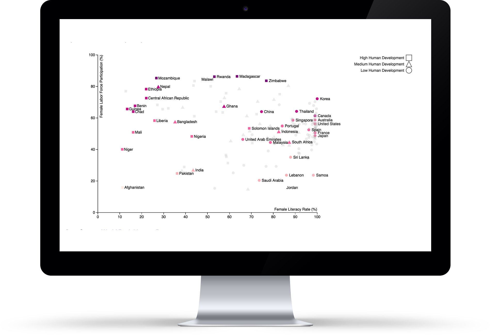
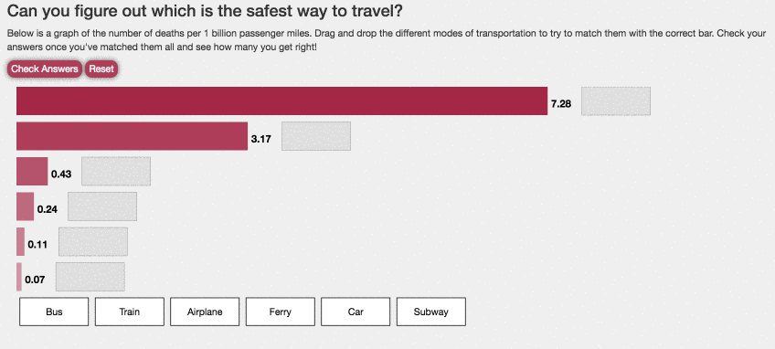

Data Visualization
DATA VISUALIZARTION PROJECTS
PROGRAMMING LANGUAGE: JavaScript d3, HTML/LESS
PROJRCT DESCRIPTION:
These data-driven web-applications were programmed by HTML/CSS, Javascript, d3.js, svg and other web developed common tools. They also include data representation with relational and non-relational databases, data mining to find patterns and make predictions, and graphical presentation for visualization.
Women in the workforce
To take a closer look into how many women comprise the labor force in the world and how far I have really come, I took to the female labor force participation data from The World Bank’s abundance of economic data.
 The first bucket ranges from 0 to 20% of women in the labor force while the last one ranges from 80 to 100% as seen on the map. The darker the pink, the more women in the labor force. These colors were selected from colorbrewer2.org. To effectively display this information visually, made use of json and d3.
The scatterplot shows this female literacy data in comparison to the female participation rate. The colors were kept consistent with those from the map and shapes were used to show the difference between a country with high human development as opposed to one with low human development or medium human development.In addition, to prevent the audience from being overwhelmed with information, some points on the scatterplot were made darker than others.
US Flight Crash
Our story focuses on the safety of traveling which narrows down specifically into the dangers of transportation by airplane. I were interested in seeing if there were major changes in crime rates for the US over the years.
